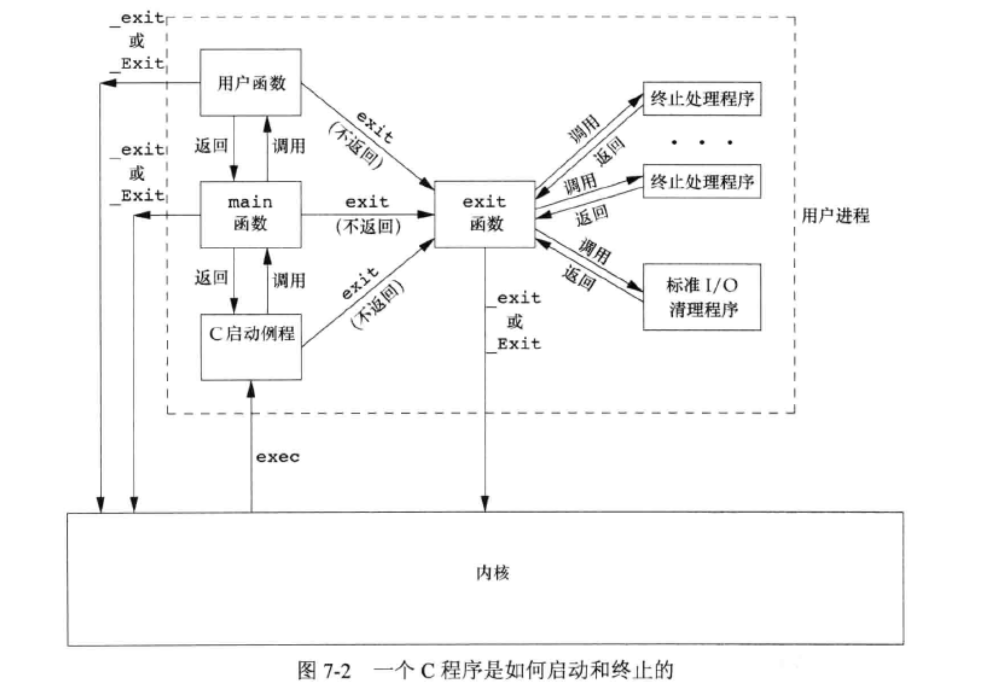
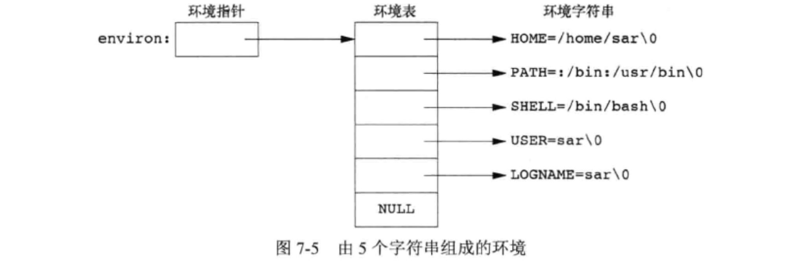
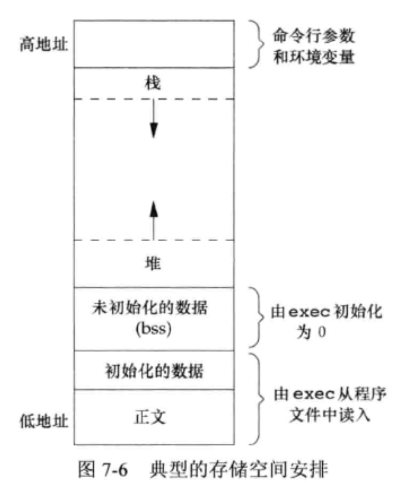

<!DOCTYPE html>
<html lang="en">

<head>
  <meta charset="utf-8" />
   
  <meta name="keywords" content="生活,旅行,思考,代码,博客" />
   
  <meta name="description" content="一座孤岛" />
  
  <meta name="viewport" content="width=device-width, initial-scale=1, maximum-scale=1" />
  <title>
    第七章——进程环境 |  akaQin&#39;s Blog
  </title>
  <meta name="generator" content="hexo-theme-yilia-plus">
  
  <link rel="shortcut icon" href="/favicon.ico" />
  
  
<link rel="stylesheet" href="/css/style.css">

  
<script src="/js/pace.min.js"></script>


  

  

<link rel="alternate" href="/atom.xml" title="akaQin's Blog" type="application/atom+xml">
</head>

</html>

<body>
  <div id="app">
    <main class="content">
      <section class="outer">
  <article id="post-第七章——进程环境" class="article article-type-post" itemscope
  itemprop="blogPost" data-scroll-reveal>

  <div class="article-inner">
    
    <header class="article-header">
       
<h1 class="article-title sea-center" style="border-left:0" itemprop="name">
  第七章——进程环境
</h1>
  

    </header>
    

    
    <div class="article-meta">
      <a href="/2020/02/23/%E7%AC%AC%E4%B8%83%E7%AB%A0%E2%80%94%E2%80%94%E8%BF%9B%E7%A8%8B%E7%8E%AF%E5%A2%83/" class="article-date">
  <time datetime="2020-02-23T08:03:39.000Z" itemprop="datePublished">2020-02-23</time>
</a>
      
  <div class="article-category">
    <a class="article-category-link" href="/categories/%E8%AF%BB%E4%B9%A6%E7%AC%94%E8%AE%B0/">读书笔记</a>
  </div>

      
      
<div class="word_count">
    <span class="post-time">
        <span class="post-meta-item-icon">
            <i class="ri-quill-pen-line"></i>
            <span class="post-meta-item-text"> 字数统计:</span>
            <span class="post-count">3.9k字</span>
        </span>
    </span>

    <span class="post-time">
        &nbsp; | &nbsp;
        <span class="post-meta-item-icon">
            <i class="ri-book-open-line"></i>
            <span class="post-meta-item-text"> 阅读时长≈</span>
            <span class="post-count">13分钟</span>
        </span>
    </span>
</div>

      
    </div>
    

    
    
    <div class="tocbot"></div>


    

    
    <div class="article-entry" itemprop="articleBody">

        second case
      


      

      
      <h3 id="进程开始"><a href="#进程开始" class="headerlink" title="进程开始"></a>进程开始</h3>   <figure class="highlight plain"><table><tr><td class="gutter"><pre><span class="line">1</span><br></pre></td><td class="code"><pre><span class="line">int main(int argc, char *argv[]);</span><br></pre></td></tr></table></figure>
<p>   以main函数开始执行。当内核执行C程序时，在调用main前先调用一个特殊的启动例程。可执行程序将此启动例程指定为程序的起始地址——这是由链接编辑器设置的，而链接编辑器则由C编译器调用。启动例程从内核取得命令行参数和环境变量值，然后为按上述方式调用做好安排。</p>
<h3 id="进程终止"><a href="#进程终止" class="headerlink" title="进程终止"></a>进程终止</h3><p>   有8种终止方式，前5种为正常终止：</p>
<ol>
<li>从main返回</li>
<li>调用exit</li>
<li>调用_exit或_Exit</li>
<li>最后一个线程从启动例程返回</li>
<li>从最后一个线程调用pthread_exit<br>异常终止有3种：</li>
<li>调用abort</li>
<li>遇到一个信号</li>
<li>最后一个线程对取消请求做出响应</li>
</ol>
<h3 id="终止处理程序"><a href="#终止处理程序" class="headerlink" title="终止处理程序"></a>终止处理程序</h3><ul>
<li>一个进程可以通过<code>atexit</code>函数登记至多32个函数作为终止处理程序（exit handler），这些函数将在程序终止时有<code>exit</code>自动调用。<br> 调用顺序与登记顺序相反，登记多次也会调用多次。<br> 如若程序调用<code>exec</code>函数族中任一函数，则将清除所有已安装的终止处理程序。</li>
</ul>
<h3 id="exit函数"><a href="#exit函数" class="headerlink" title="exit函数"></a><code>exit</code>函数</h3><ul>
<li><code>_exit</code>和<code>_Exit</code>立即进入内核，<code>exit</code>首先调用各终止处理程序，然后通过<code>fclose</code>关闭所有打开流，这造成输出缓冲中的所有数据都被冲洗（写到文件上）。</li>
<li>内核使程序执行的唯一方法是调用一个<code>exec</code>函数。进程自愿终止的唯一方法是显示或隐式地（通过调用<code>exit</code>）调用<code>_exit</code>或<code>_Exit</code>。进程也可非自愿地由一个信号使其终止。<br> </li>
</ul>
<h3 id="环境变量与环境表"><a href="#环境变量与环境表" class="headerlink" title="环境变量与环境表"></a>环境变量与环境表</h3><ul>
<li>通常用<code>getenv</code>和<code>putenv</code>访问特定的环境变量</li>
<li>我们能影响的通常只是当前进程及其后生成和调用的任何子进程的环境，但不能影响父进程的环境，这通常是一个shell进程</li>
<li>环境表和环境字符串通常存放在进程存储空间的顶部（栈之上）<br> </li>
</ul>
<h3 id="C程序的存储空间布局"><a href="#C程序的存储空间布局" class="headerlink" title="C程序的存储空间布局"></a>C程序的存储空间布局</h3><ul>
<li>正文段。由CPU执行的机器指令部分。通常，正文段是可共享的，所以即使频繁执行的程序在存储器中也只需要由一个副本。正文段通常是只读的，以防止程序由于意外而修改其指令。</li>
<li>初始化数据段，通常称为数据段。包含了明确赋初值的变量。例如C程序中任何函数之外的声明：<figure class="highlight c"><table><tr><td class="gutter"><pre><span class="line">1</span><br></pre></td><td class="code"><pre><span class="line"><span class="keyword">int</span> maxcount = <span class="number">99</span>;</span><br></pre></td></tr></table></figure></li>
<li>未初始化数据段，也称为bss（block started by symbol）段。程序开始执行前，内核将此段数据初始化为0或空指针。例如函数外的声明：<figure class="highlight c"><table><tr><td class="gutter"><pre><span class="line">1</span><br></pre></td><td class="code"><pre><span class="line"><span class="keyword">long</span> sum[<span class="number">100</span>];</span><br></pre></td></tr></table></figure></li>
<li>栈。自动变量以及每次函数调用时所需保存的信息都存放在此段中。</li>
<li>堆。通常用于进行动态存储分配。</li>
<li>未初始化数据段的内容并不存储在磁盘文件中，内核在程序运行前将它们设置为0.存放在磁盘文件中的段只有正文段和初始化数据段。<br> </li>
</ul>
<h3 id="共享库"><a href="#共享库" class="headerlink" title="共享库"></a>共享库</h3><ul>
<li>共享库使得可执行文件中不再需要包含公用的库函数，只需要在所有进程都可引用的存储区保存这种库例程的一个副本。</li>
<li>程序第一次执行或者第一次调用某个库函数时，用动态链接方法将程序与共享库函数链接。</li>
<li>这减少了每个可执行文件的长度，但增加了一些运行时间开销。这种时间开销发生在该程序第一次执行时或每个共享库函数第一次被调用时。</li>
<li>共享库的另一个优点是可以用库函数的新版本代替老版本而无需对使用该库的程序重新链接编辑。</li>
</ul>
<h3 id="存储空间分配"><a href="#存储空间分配" class="headerlink" title="存储空间分配"></a>存储空间分配</h3><ul>
<li><code>malloc</code>分配指定字节数的存储区。其中的初始值不确定。</li>
<li><code>calloc</code>分配的每一位都初始化为0。</li>
<li><code>realloc</code>增加或减少分配区长度。新增区域内初始值不确定</li>
<li>这些分配例程通常通过<code>sbrk</code>系统调用实现</li>
<li><a href="../为什么calloc会比malloc-memset快">为什么calloc会比malloc-memset快</a></li>
<li>大部分<code>malloc</code>和<code>free</code>的实现都不减小进程的存储空间。释放的空间可供以后再分配，但将它们保持在malloc池中而不返回给内核。</li>
<li>大多数实现所分配的存储空间比要求的要大一些，额外的空间用来记录管理信息——分配块的长度、指向下一个分配块的指针等。</li>
</ul>
<h3 id="内存分配时常见错误"><a href="#内存分配时常见错误" class="headerlink" title="内存分配时常见错误"></a>内存分配时常见错误</h3><ul>
<li>在动态分配的缓冲区前后进行写操作，破坏管理记录信息或用于其他动态分配的对象。</li>
<li>释放一个已经释放了的块</li>
<li>调用free时的指针不是三个alloc函数的返回值</li>
<li>调用malloc不调用free，造成内存泄漏。进程地址空间长度会慢慢增加，直至没有空闲空间。此时由于过度的换页开销，会导致性能下降。</li>
</ul>
<h3 id="setjump与longjump"><a href="#setjump与longjump" class="headerlink" title="setjump与longjump"></a>setjump与longjump</h3><h3 id="进程开始-1"><a href="#进程开始-1" class="headerlink" title="进程开始"></a>进程开始</h3>   <figure class="highlight plain"><table><tr><td class="gutter"><pre><span class="line">1</span><br></pre></td><td class="code"><pre><span class="line">int main(int argc, char *argv[]);</span><br></pre></td></tr></table></figure>
<p>   以main函数开始执行。当内核执行C程序时，在调用main前先调用一个特殊的启动例程。可执行程序将此启动例程指定为程序的起始地址——这是由链接编辑器设置的，而链接编辑器则由C编译器调用。启动例程从内核取得命令行参数和环境变量值，然后为按上述方式调用做好安排。</p>
<h3 id="进程终止-1"><a href="#进程终止-1" class="headerlink" title="进程终止"></a>进程终止</h3><p>   有8种终止方式，前5种为正常终止：</p>
<ol>
<li>从main返回</li>
<li>调用exit</li>
<li>调用_exit或_Exit</li>
<li>最后一个线程从启动例程返回</li>
<li>从最后一个线程调用pthread_exit<br>异常终止有3种：</li>
<li>调用abort</li>
<li>遇到一个信号</li>
<li>最后一个线程对取消请求做出响应</li>
</ol>
<h3 id="终止处理程序-1"><a href="#终止处理程序-1" class="headerlink" title="终止处理程序"></a>终止处理程序</h3><ul>
<li>一个进程可以通过<code>atexit</code>函数登记至多32个函数作为终止处理程序（exit handler），这些函数将在程序终止时有<code>exit</code>自动调用。<br> 调用顺序与登记顺序相反，登记多次也会调用多次。<br> 如若程序调用<code>exec</code>函数族中任一函数，则将清除所有已安装的终止处理程序。</li>
</ul>
<h3 id="exit函数-1"><a href="#exit函数-1" class="headerlink" title="exit函数"></a><code>exit</code>函数</h3><ul>
<li><code>_exit</code>和<code>_Exit</code>立即进入内核，<code>exit</code>首先调用各终止处理程序，然后通过<code>fclose</code>关闭所有打开流，这造成输出缓冲中的所有数据都被冲洗（写到文件上）。</li>
<li>内核使程序执行的唯一方法是调用一个<code>exec</code>函数。进程自愿终止的唯一方法是显示或隐式地（通过调用<code>exit</code>）调用<code>_exit</code>或<code>_Exit</code>。进程也可非自愿地由一个信号使其终止。<br> </li>
</ul>
<h3 id="环境变量与环境表-1"><a href="#环境变量与环境表-1" class="headerlink" title="环境变量与环境表"></a>环境变量与环境表</h3><ul>
<li>通常用<code>getenv</code>和<code>putenv</code>访问特定的环境变量</li>
<li>我们能影响的通常只是当前进程及其后生成和调用的任何子进程的环境，但不能影响父进程的环境，这通常是一个shell进程</li>
<li>环境表和环境字符串通常存放在进程存储空间的顶部（栈之上）<br> </li>
</ul>
<h3 id="C程序的存储空间布局-1"><a href="#C程序的存储空间布局-1" class="headerlink" title="C程序的存储空间布局"></a>C程序的存储空间布局</h3><ul>
<li>正文段。由CPU执行的机器指令部分。通常，正文段是可共享的，所以即使频繁执行的程序在存储器中也只需要由一个副本。正文段通常是只读的，以防止程序由于意外而修改其指令。</li>
<li>初始化数据段，通常称为数据段。包含了明确赋初值的变量。例如C程序中任何函数之外的声明：<figure class="highlight c"><table><tr><td class="gutter"><pre><span class="line">1</span><br></pre></td><td class="code"><pre><span class="line"><span class="keyword">int</span> maxcount = <span class="number">99</span>;</span><br></pre></td></tr></table></figure></li>
<li>未初始化数据段，也称为bss（block started by symbol）段。程序开始执行前，内核将此段数据初始化为0或空指针。例如函数外的声明：<figure class="highlight c"><table><tr><td class="gutter"><pre><span class="line">1</span><br></pre></td><td class="code"><pre><span class="line"><span class="keyword">long</span> sum[<span class="number">100</span>];</span><br></pre></td></tr></table></figure></li>
<li>栈。自动变量以及每次函数调用时所需保存的信息都存放在此段中。</li>
<li>堆。通常用于进行动态存储分配。</li>
<li>未初始化数据段的内容并不存储在磁盘文件中，内核在程序运行前将它们设置为0.存放在磁盘文件中的段只有正文段和初始化数据段。<br> </li>
</ul>
<h3 id="共享库-1"><a href="#共享库-1" class="headerlink" title="共享库"></a>共享库</h3><ul>
<li>共享库使得可执行文件中不再需要包含公用的库函数，只需要在所有进程都可引用的存储区保存这种库例程的一个副本。</li>
<li>程序第一次执行或者第一次调用某个库函数时，用动态链接方法将程序与共享库函数链接。</li>
<li>这减少了每个可执行文件的长度，但增加了一些运行时间开销。这种时间开销发生在该程序第一次执行时或每个共享库函数第一次被调用时。</li>
<li>共享库的另一个优点是可以用库函数的新版本代替老版本而无需对使用该库的程序重新链接编辑。</li>
</ul>
<h3 id="存储空间分配-1"><a href="#存储空间分配-1" class="headerlink" title="存储空间分配"></a>存储空间分配</h3><ul>
<li><code>malloc</code>分配指定字节数的存储区。其中的初始值不确定。</li>
<li><code>calloc</code>分配的每一位都初始化为0。</li>
<li><code>realloc</code>增加或减少分配区长度。新增区域内初始值不确定</li>
<li>这些分配例程通常通过<code>sbrk</code>系统调用实现</li>
<li><a href="../为什么calloc会比malloc-memset快">为什么calloc会比malloc-memset快</a></li>
<li>大部分<code>malloc</code>和<code>free</code>的实现都不减小进程的存储空间。释放的空间可供以后再分配，但将它们保持在malloc池中而不返回给内核。</li>
<li>大多数实现所分配的存储空间比要求的要大一些，额外的空间用来记录管理信息——分配块的长度、指向下一个分配块的指针等。</li>
</ul>
<h3 id="内存分配时常见错误-1"><a href="#内存分配时常见错误-1" class="headerlink" title="内存分配时常见错误"></a>内存分配时常见错误</h3><ul>
<li>在动态分配的缓冲区前后进行写操作，破坏管理记录信息或用于其他动态分配的对象。</li>
<li>释放一个已经释放了的块</li>
<li>调用free时的指针不是三个alloc函数的返回值</li>
<li>调用malloc不调用free，造成内存泄漏。进程地址空间长度会慢慢增加，直至没有空闲空间。此时由于过度的换页开销，会导致性能下降。</li>
</ul>
<h3 id="setjump与longjump-1"><a href="#setjump与longjump-1" class="headerlink" title="setjump与longjump"></a>setjump与longjump</h3><h3 id="进程开始-2"><a href="#进程开始-2" class="headerlink" title="进程开始"></a>进程开始</h3>   <figure class="highlight plain"><table><tr><td class="gutter"><pre><span class="line">1</span><br></pre></td><td class="code"><pre><span class="line">int main(int argc, char *argv[]);</span><br></pre></td></tr></table></figure>
<p>   以main函数开始执行。当内核执行C程序时，在调用main前先调用一个特殊的启动例程。可执行程序将此启动例程指定为程序的起始地址——这是由链接编辑器设置的，而链接编辑器则由C编译器调用。启动例程从内核取得命令行参数和环境变量值，然后为按上述方式调用做好安排。</p>
<h3 id="进程终止-2"><a href="#进程终止-2" class="headerlink" title="进程终止"></a>进程终止</h3><p>   有8种终止方式，前5种为正常终止：</p>
<ol>
<li>从main返回</li>
<li>调用exit</li>
<li>调用_exit或_Exit</li>
<li>最后一个线程从启动例程返回</li>
<li>从最后一个线程调用pthread_exit<br>异常终止有3种：</li>
<li>调用abort</li>
<li>遇到一个信号</li>
<li>最后一个线程对取消请求做出响应</li>
</ol>
<h3 id="终止处理程序-2"><a href="#终止处理程序-2" class="headerlink" title="终止处理程序"></a>终止处理程序</h3><ul>
<li>一个进程可以通过<code>atexit</code>函数登记至多32个函数作为终止处理程序（exit handler），这些函数将在程序终止时有<code>exit</code>自动调用。<br> 调用顺序与登记顺序相反，登记多次也会调用多次。<br> 如若程序调用<code>exec</code>函数族中任一函数，则将清除所有已安装的终止处理程序。</li>
</ul>
<h3 id="exit函数-2"><a href="#exit函数-2" class="headerlink" title="exit函数"></a><code>exit</code>函数</h3><ul>
<li><code>_exit</code>和<code>_Exit</code>立即进入内核，<code>exit</code>首先调用各终止处理程序，然后通过<code>fclose</code>关闭所有打开流，这造成输出缓冲中的所有数据都被冲洗（写到文件上）。</li>
<li>内核使程序执行的唯一方法是调用一个<code>exec</code>函数。进程自愿终止的唯一方法是显示或隐式地（通过调用<code>exit</code>）调用<code>_exit</code>或<code>_Exit</code>。进程也可非自愿地由一个信号使其终止。<br> </li>
</ul>
<h3 id="环境变量与环境表-2"><a href="#环境变量与环境表-2" class="headerlink" title="环境变量与环境表"></a>环境变量与环境表</h3><ul>
<li>通常用<code>getenv</code>和<code>putenv</code>访问特定的环境变量</li>
<li>我们能影响的通常只是当前进程及其后生成和调用的任何子进程的环境，但不能影响父进程的环境，这通常是一个shell进程</li>
<li>环境表和环境字符串通常存放在进程存储空间的顶部（栈之上）<br> </li>
</ul>
<h3 id="C程序的存储空间布局-2"><a href="#C程序的存储空间布局-2" class="headerlink" title="C程序的存储空间布局"></a>C程序的存储空间布局</h3><ul>
<li>正文段。由CPU执行的机器指令部分。通常，正文段是可共享的，所以即使频繁执行的程序在存储器中也只需要由一个副本。正文段通常是只读的，以防止程序由于意外而修改其指令。</li>
<li>初始化数据段，通常称为数据段。包含了明确赋初值的变量。例如C程序中任何函数之外的声明：<figure class="highlight c"><table><tr><td class="gutter"><pre><span class="line">1</span><br></pre></td><td class="code"><pre><span class="line"><span class="keyword">int</span> maxcount = <span class="number">99</span>;</span><br></pre></td></tr></table></figure></li>
<li>未初始化数据段，也称为bss（block started by symbol）段。程序开始执行前，内核将此段数据初始化为0或空指针。例如函数外的声明：<figure class="highlight c"><table><tr><td class="gutter"><pre><span class="line">1</span><br></pre></td><td class="code"><pre><span class="line"><span class="keyword">long</span> sum[<span class="number">100</span>];</span><br></pre></td></tr></table></figure></li>
<li>栈。自动变量以及每次函数调用时所需保存的信息都存放在此段中。</li>
<li>堆。通常用于进行动态存储分配。</li>
<li>未初始化数据段的内容并不存储在磁盘文件中，内核在程序运行前将它们设置为0.存放在磁盘文件中的段只有正文段和初始化数据段。<br> </li>
</ul>
<h3 id="共享库-2"><a href="#共享库-2" class="headerlink" title="共享库"></a>共享库</h3><ul>
<li>共享库使得可执行文件中不再需要包含公用的库函数，只需要在所有进程都可引用的存储区保存这种库例程的一个副本。</li>
<li>程序第一次执行或者第一次调用某个库函数时，用动态链接方法将程序与共享库函数链接。</li>
<li>这减少了每个可执行文件的长度，但增加了一些运行时间开销。这种时间开销发生在该程序第一次执行时或每个共享库函数第一次被调用时。</li>
<li>共享库的另一个优点是可以用库函数的新版本代替老版本而无需对使用该库的程序重新链接编辑。</li>
</ul>
<h3 id="存储空间分配-2"><a href="#存储空间分配-2" class="headerlink" title="存储空间分配"></a>存储空间分配</h3><ul>
<li><code>malloc</code>分配指定字节数的存储区。其中的初始值不确定。</li>
<li><code>calloc</code>分配的每一位都初始化为0。</li>
<li><code>realloc</code>增加或减少分配区长度。新增区域内初始值不确定</li>
<li>这些分配例程通常通过<code>sbrk</code>系统调用实现</li>
<li><a href="../为什么calloc会比malloc-memset快">为什么calloc会比malloc-memset快</a></li>
<li>大部分<code>malloc</code>和<code>free</code>的实现都不减小进程的存储空间。释放的空间可供以后再分配，但将它们保持在malloc池中而不返回给内核。</li>
<li>大多数实现所分配的存储空间比要求的要大一些，额外的空间用来记录管理信息——分配块的长度、指向下一个分配块的指针等。</li>
</ul>
<h3 id="内存分配时常见错误-2"><a href="#内存分配时常见错误-2" class="headerlink" title="内存分配时常见错误"></a>内存分配时常见错误</h3><ul>
<li>在动态分配的缓冲区前后进行写操作，破坏管理记录信息或用于其他动态分配的对象。</li>
<li>释放一个已经释放了的块</li>
<li>调用free时的指针不是三个alloc函数的返回值</li>
<li>调用malloc不调用free，造成内存泄漏。进程地址空间长度会慢慢增加，直至没有空闲空间。此时由于过度的换页开销，会导致性能下降。</li>
</ul>
<h3 id="setjump与longjump-2"><a href="#setjump与longjump-2" class="headerlink" title="setjump与longjump"></a>setjump与longjump</h3>
      
      <!-- reward -->
      
      <div id="reward-btn">
        打赏
      </div>
      
    </div>
    

      <!-- copyright -->
      
        <div class="declare">
          <ul class="post-copyright">
            <li>
              <i class="ri-copyright-line"></i>
              <strong>版权声明： </strong s>
              本博客所有文章除特别声明外，均采用 <a href="https://www.apache.org/licenses/LICENSE-2.0.html" rel="external nofollow"
                target="_blank">Apache License 2.0</a> 许可协议。转载请注明出处！
            </li>
          </ul>
        </div>
        
    <footer class="article-footer">
      
          
<div class="share-btn">
      <span class="share-sns share-outer">
        <i class="ri-share-forward-line"></i>
        分享
      </span>
      <div class="share-wrap">
        <i class="arrow"></i>
        <div class="share-icons">
          
          <a class="weibo share-sns" href="javascript:;" data-type="weibo">
            <i class="ri-weibo-fill"></i>
          </a>
          <a class="weixin share-sns wxFab" href="javascript:;" data-type="weixin">
            <i class="ri-wechat-fill"></i>
          </a>
          <a class="qq share-sns" href="javascript:;" data-type="qq">
            <i class="ri-qq-fill"></i>
          </a>
          <a class="douban share-sns" href="javascript:;" data-type="douban">
            <i class="ri-douban-line"></i>
          </a>
          <!-- <a class="qzone share-sns" href="javascript:;" data-type="qzone">
            <i class="icon icon-qzone"></i>
          </a> -->
          
          <a class="facebook share-sns" href="javascript:;" data-type="facebook">
            <i class="ri-facebook-circle-fill"></i>
          </a>
          <a class="twitter share-sns" href="javascript:;" data-type="twitter">
            <i class="ri-twitter-fill"></i>
          </a>
          <a class="google share-sns" href="javascript:;" data-type="google">
            <i class="ri-google-fill"></i>
          </a>
        </div>
      </div>
</div>

<div class="wx-share-modal">
    <a class="modal-close" href="javascript:;"><i class="ri-close-circle-line"></i></a>
    <p>扫一扫，分享到微信</p>
    <div class="wx-qrcode">
      
    </div>
</div>

<div id="share-mask"></div>
      
      
  <ul class="article-tag-list" itemprop="keywords"><li class="article-tag-list-item"><a class="article-tag-list-link" href="/tags/APUE/" rel="tag">APUE</a></li><li class="article-tag-list-item"><a class="article-tag-list-link" href="/tags/%E6%8A%80%E6%9C%AF/" rel="tag">技术</a></li><li class="article-tag-list-item"><a class="article-tag-list-link" href="/tags/%E8%BF%9B%E7%A8%8B/" rel="tag">进程</a></li></ul>


    </footer>

  </div>

  
  
  <nav class="article-nav">
    
      <a href="/2020/02/23/C%E8%AF%AD%E8%A8%80%E7%BC%96%E7%A8%8B%E5%BF%83%E5%BE%97/" class="article-nav-link">
        <strong class="article-nav-caption">上一篇</strong>
        <div class="article-nav-title">
          
            C语言编程心得
          
        </div>
      </a>
    
    
      <a href="/2020/02/23/first-post/" class="article-nav-link">
        <strong class="article-nav-caption">下一篇</strong>
        <div class="article-nav-title">first post</div>
      </a>
    
  </nav>


  

  
  
<!-- valine评论 -->
<div id="vcomments-box">
    <div id="vcomments">
    </div>
</div>
<script src="//cdn1.lncld.net/static/js/3.0.4/av-min.js"></script>
<script src='https://cdn.jsdelivr.net/npm/valine@1.3.10/dist/Valine.min.js'></script>
<script>
    new Valine({
        el: '#vcomments',
        app_id: 'X2Yrs2HgM1dBr94LBlfP7Jsj-gzGzoHsz',
        app_key: 'x2WQjNYF5CQseEAN1iSqXOLQ',
        path: window.location.pathname,
        notify: 'true',
        verify: 'false',
        avatar: 'mp',
        placeholder: '给我的文章加点评论吧~',
        recordIP: true
    });
    const infoEle = document.querySelector('#vcomments .info');
    if (infoEle && infoEle.childNodes && infoEle.childNodes.length > 0) {
        infoEle.childNodes.forEach(function (item) {
            item.parentNode.removeChild(item);
        });
    }
</script>
<style>
    #vcomments-box {
        padding: 5px 30px;
    }

    @media screen and (max-width: 800px) {
        #vcomments-box {
            padding: 5px 0px;
        }
    }

    #vcomments-box #vcomments {
        background-color: #fff;
    }

    .v .vlist .vcard .vh {
        padding-right: 20px;
    }

    .v .vlist .vcard {
        padding-left: 10px;
    }
</style>

  

  
  
  

</article>

</section>
      <footer class="footer">
  <div class="outer">
    <ul class="list-inline">
      <li>
        &copy;
        2019-2020
        Arron Qin
      </li>
      <li>
        
      </li>
    </ul>
    <ul class="list-inline">
      <li>
        
        
        <span>
  <i>PV:<span id="busuanzi_value_page_pv"></span></i>
  <i>UV:<span id="busuanzi_value_site_uv"></span></i>
</span>
        
      </li>
      <li>
        <!-- cnzz统计 -->
        
      </li>
    </ul>
  </div>
</footer>
    <div class="to_top">
        <div class="totop" id="totop">
  <i class="ri-arrow-up-line"></i>
</div>
      </div>
    </main>
      <aside class="sidebar">
        <button class="navbar-toggle"></button>
<nav class="navbar">
  
  <div class="logo">
    <a href="/"></a>
  </div>
  
  <ul class="nav nav-main">
    
    <li class="nav-item">
      <a class="nav-item-link" href="/">主页</a>
    </li>
    
    <li class="nav-item">
      <a class="nav-item-link" href="/archives">归档</a>
    </li>
    
    <li class="nav-item">
      <a class="nav-item-link" href="/categories">分类</a>
    </li>
    
    <li class="nav-item">
      <a class="nav-item-link" href="/tags">标签</a>
    </li>
    
    <li class="nav-item">
      <a class="nav-item-link" href="/about/me">关于我</a>
    </li>
    
  </ul>
</nav>
<nav class="navbar navbar-bottom">
  <ul class="nav">
    <li class="nav-item">
      
      <a class="nav-item-link nav-item-search"  title="Search">
        <i class="ri-search-line"></i>
      </a>
      
      
      <a class="nav-item-link" target="_blank" href="/atom.xml" title="RSS Feed">
        <i class="ri-rss-line"></i>
      </a>
      
    </li>
  </ul>
</nav>
<div class="search-form-wrap">
  <div class="local-search local-search-plugin">
  <input type="search" id="local-search-input" class="local-search-input" placeholder="Search...">
  <div id="local-search-result" class="local-search-result"></div>
</div>
</div>
      </aside>
      <div id="mask"></div>

<!-- #reward -->
<div id="reward">
  <span class="close"><i class="ri-close-line"></i></span>
  <p class="reward-p"><i class="ri-cup-line"></i>请我喝杯咖啡吧~</p>
  <div class="reward-box">
    
    <div class="reward-item">
      
      <span class="reward-type">支付宝</span>
    </div>
    
    
    <div class="reward-item">
      
      <span class="reward-type">微信</span>
    </div>
    
  </div>
</div>
      
<script src="/js/jquery-2.0.3.min.js"></script>


<script src="/js/jquery.justifiedGallery.min.js"></script>


<script src="/js/lazyload.min.js"></script>


<script src="/js/busuanzi-2.3.pure.min.js"></script>


<script src="/js/share.js"></script>


<script src="/fancybox/jquery.fancybox.min.js"></script>


<script>
  try {
    var typed = new Typed("#subtitle", {
    strings: ['面朝大海，春暖花开','愿你一生努力，一生被爱','想要的都拥有，得不到的都释怀'],
    startDelay: 0,
    typeSpeed: 200,
    loop: true,
    backSpeed: 100,
    showCursor: true
    });
  } catch (err) {
  }
  
</script>


<script src="/js/tocbot.min.js"></script>

<script>
  // Tocbot_v4.7.0  http://tscanlin.github.io/tocbot/
  tocbot.init({
    tocSelector: '.tocbot',
    contentSelector: '.article-entry',
    headingSelector: 'h1, h2, h3, h4, h5, h6',
    hasInnerContainers: true,
    scrollSmooth: true,
    scrollContainer:'main',
    positionFixedSelector: '.tocbot',
    positionFixedClass: 'is-position-fixed',
    fixedSidebarOffset: 'auto',
    onClick: (e) => {
      $('.toc-link').removeClass('is-active-link');
      $(`a[href=${e.target.hash}]`).addClass('is-active-link');
      $(e.target.hash).scrollIntoView();
      return false;
    }
  });
</script>


<script>
  var ayerConfig = {
    mathjax: false
  }
</script>


<script src="/js/ayer.js"></script>


<script src="https://cdn.jsdelivr.net/npm/jquery-modal@0.9.2/jquery.modal.min.js"></script>
<link rel="stylesheet" href="https://cdn.jsdelivr.net/npm/jquery-modal@0.9.2/jquery.modal.min.css">


<!-- Root element of PhotoSwipe. Must have class pswp. -->
<div class="pswp" tabindex="-1" role="dialog" aria-hidden="true">

    <!-- Background of PhotoSwipe. 
         It's a separate element as animating opacity is faster than rgba(). -->
    <div class="pswp__bg"></div>

    <!-- Slides wrapper with overflow:hidden. -->
    <div class="pswp__scroll-wrap">

        <!-- Container that holds slides. 
            PhotoSwipe keeps only 3 of them in the DOM to save memory.
            Don't modify these 3 pswp__item elements, data is added later on. -->
        <div class="pswp__container">
            <div class="pswp__item"></div>
            <div class="pswp__item"></div>
            <div class="pswp__item"></div>
        </div>

        <!-- Default (PhotoSwipeUI_Default) interface on top of sliding area. Can be changed. -->
        <div class="pswp__ui pswp__ui--hidden">

            <div class="pswp__top-bar">

                <!--  Controls are self-explanatory. Order can be changed. -->

                <div class="pswp__counter"></div>

                <button class="pswp__button pswp__button--close" title="Close (Esc)"></button>

                <button class="pswp__button pswp__button--share" style="display:none" title="Share"></button>

                <button class="pswp__button pswp__button--fs" title="Toggle fullscreen"></button>

                <button class="pswp__button pswp__button--zoom" title="Zoom in/out"></button>

                <!-- Preloader demo http://codepen.io/dimsemenov/pen/yyBWoR -->
                <!-- element will get class pswp__preloader--active when preloader is running -->
                <div class="pswp__preloader">
                    <div class="pswp__preloader__icn">
                        <div class="pswp__preloader__cut">
                            <div class="pswp__preloader__donut"></div>
                        </div>
                    </div>
                </div>
            </div>

            <div class="pswp__share-modal pswp__share-modal--hidden pswp__single-tap">
                <div class="pswp__share-tooltip"></div>
            </div>

            <button class="pswp__button pswp__button--arrow--left" title="Previous (arrow left)">
            </button>

            <button class="pswp__button pswp__button--arrow--right" title="Next (arrow right)">
            </button>

            <div class="pswp__caption">
                <div class="pswp__caption__center"></div>
            </div>

        </div>

    </div>

</div>

<link rel="stylesheet" href="https://cdn.jsdelivr.net/npm/photoswipe@4.1.3/dist/photoswipe.min.css">
<link rel="stylesheet" href="https://cdn.jsdelivr.net/npm/photoswipe@4.1.3/dist/default-skin/default-skin.css">
<script src="https://cdn.jsdelivr.net/npm/photoswipe@4.1.3/dist/photoswipe.min.js"></script>
<script src="https://cdn.jsdelivr.net/npm/photoswipe@4.1.3/dist/photoswipe-ui-default.min.js"></script>

<script>
    function viewer_init() {
        let pswpElement = document.querySelectorAll('.pswp')[0];
        let $imgArr = document.querySelectorAll(('.article-entry img:not(.reward-img)'))

        $imgArr.forEach(($em, i) => {
            $em.onclick = () => {
                // slider展开状态
                // todo: 这样不好，后面改成状态
                if (document.querySelector('.left-col.show')) return
                let items = []
                $imgArr.forEach(($em2, i2) => {
                    let img = $em2.getAttribute('data-idx', i2)
                    let src = $em2.getAttribute('data-target') || $em2.getAttribute('src')
                    let title = $em2.getAttribute('alt')
                    // 获得原图尺寸
                    const image = new Image()
                    image.src = src
                    items.push({
                        src: src,
                        w: image.width || $em2.width,
                        h: image.height || $em2.height,
                        title: title
                    })
                })
                var gallery = new PhotoSwipe(pswpElement, PhotoSwipeUI_Default, items, {
                    index: parseInt(i)
                });
                gallery.init()
            }
        })
    }
    viewer_init()
</script>


<script type="text/javascript" src="https://js.users.51.la/20544303.js"></script>
  </div>
</body>

</html>